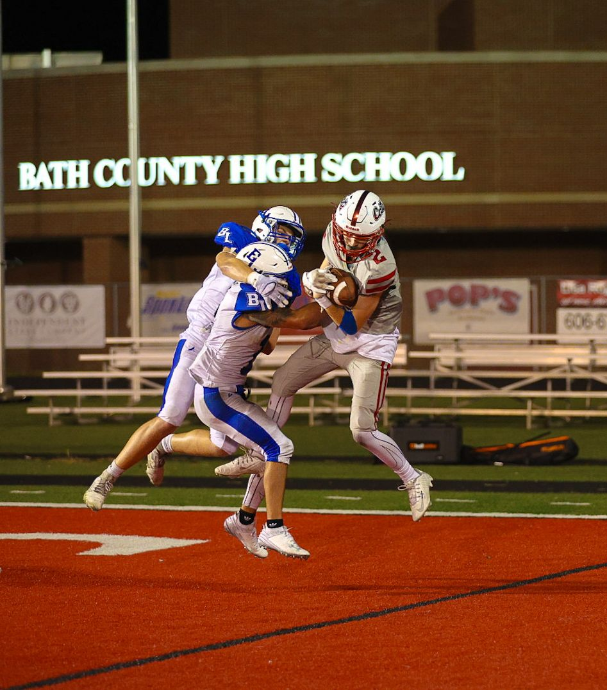
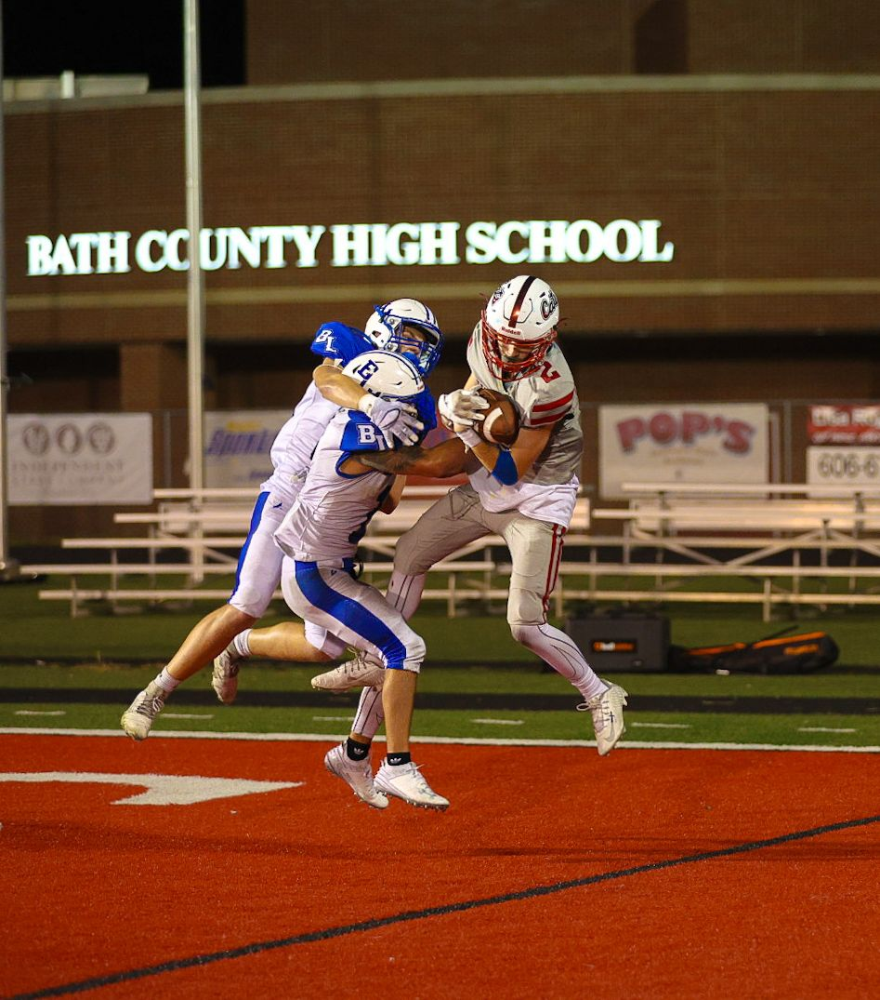

Logan is a standout wide receiver for the Bath County Wildcats during the 2024 high school football season. In a pivotal game against Fleming County, he recorded four receptions for 69 yards, including a touchdown, and successfully executed a crucial two-point conversion that secured a 36–35 victory for the Wildcats . Jones's performance was instrumental in propelling Bath County to a third seed in the Class 3A Region 3 Playoffs.
Logan's football career has included:
- Kentucky Middle School Football All-Stars
- Kentucky Future Stars
- 2023 All EKC Honorable Mention
- 2024 All EKC 2nd Team
- Featured in an article by Kevin Moses.
 

{kind=link}
2024 Season Videos
Hudl highlights can be found here.
2024 Season Stats
| Stat | Results |
|---|---|
| Games Played | 10 |
| Rush Attemps | 14 |
| Net Yards Rushing | 33 |
| Touchdowns Scored Rushing | 1 |
| Pass Receptions | 23 |
| Yards Gained Receiving | 358 |
| Touchdowns Pass Receptions | 7 |
| Defensive Fumbles Forced | 1 |
| Solo Tackes | 16 |
| Assisted Tackles | 4 |
| Interceptions | 1 |
Current Player Stats
| Stat | Results |
|---|---|
| Height/Weight | 5'10 / 150 lb |
| GPA | 3.7 |
| ACT | 18 |
| Honors | |
| Bench | 200 lbs |
| Squat | 275 lbs |
| Deadlift | 315 lbs |
| 40 Yd Dash | 4.7 |
| Broad Jump |